Management Discussion and Analysis
Social and Environmental Capital


SLT contributes to the development of the country by building the digital infrastructure that will carry its economy and citizens into a bold, digitally enabled era. As a responsible corporate citizen, SLT is cognisant of the role it plays in upholding the country and the communities it is a part of. To this end, SLT and its subsidiaries work to improve the lives and convenience of Sri Lankan citizens, while being conscious of the environment and striving to ensure that future generations benefit from a connected, clean Sri Lanka.
Social initiatives
SLT's social initiatives are conducted as a corporate entity, through the SLT Customer Clubs, and through the organisation's employees who are encouraged to volunteer their services to the Company's many initiatives. The SLT Customer Club concept was introduced in 2016 with the aim of creating a network of SLT loyal customers and partnering with them to carry out social responsibility projects to support creating of better tomorrow for all Sri Lankans.There are currently, over 20 customer clubs across the island through which numerous community development programmes have been conducted throughout the country. The clubs are operated and handled independently by SLT customers.
These initiatives strive to address the goals laid out by the UN Sustainable Development Goals to address the challenges faced by our country. These challenges include providing quality education, clean drinking water, sanitation, promoting climate change, and building a more sustainable future.
Uplifting rural schools
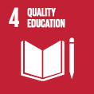
Obtaining a quality education is the foundation to creating sustainable development. In addition to improving quality of life, access to inclusive education can help equip locals with the tools required to develop innovative solutions to the world’s greatest problems.
SLT conducted several book donation programmes to school libraries across the country and conducted awareness programmes about conserving water in line with the 2019 SLT calendar theme of “Splendours of Water”. SLT also has commenced a similar initiative with its 2020 calendar theme, “Narration of Art”.
Through these CSR programmes, SLT aims to build and maintain a strong relationship with the education sector and the community while also helping to raise the bar for the standard of education in the country, which plays a critical role in shaping future generations into responsible citizens equipped with knowledge, character, and integrity. SLT plans to continue these programmes and make further enhancements to them.
Uplifting ICT education in schools
SLT is committed to uplifting the standards of ICT education in the nation. To fulfil this, SLT has implemented ICT infrastructure in schools across the island to empower the next generations of students with access to modern technology and global education. SLT donates computers to underprivileged schools, provides broadband connections with 12 months of free rental, and conducts ICT awareness lectures as part of its drive to uplift ICT education. Other than these SLT conducted several ICT awareness sessions for teachers of rural schools.
Enriching coding skills for school students
SLT successfully inaugurated the “CoderDojo @ SLT” coding and digital-making clubs in 2019. SLT collaborated with the STEMUP Educational Foundation in Sri Lanka, a non-profit volunteer-based organisation with a sound base of young professionals, to conduct the CoderDojo skill development programmes. The programme was conducted free of charge for schoolchildren of ages 10 to 17 and is just one of many initiatives by SLT to uplift the ICT landscape of Sri Lanka and transform the country to a Smart Sri Lanka.
"Sound of Salience" road safety programme
SLT Customer Club, Avissawella, the Avissawella Regional Telecom Office, and the Avissawella Police Station worked together to conduct the "Sound of Salience" road safety programme in Avissawella. The programme aimed to raise awareness about road safety to vehicle drivers. Banners were fixed around the town and stickers with positive messages about road safety pasted on vehicles. An awareness seminar was also conducted by Traffic Police HQ, Colombo, and a demonstration on road safety to school children in the local schools.
SLT e-Senior Programme
We recognise that the older generation is not as technology savvy as the millennials and aim to bridge the generation gap through the “SLT e-Senior Programme”. The workshop was designed to help older citizens overcome technology barrier and was conducted with the participation of a significant number of senior citizens. Retired persons were also included. Participants were educated on the fundamentals of using the internet and the e-services available in Sri Lanka that could help enhance their well-being and independence. The programme is an example of how SLT strives to bridge the digital divide in the country by bringing access and affordability of ICT
technologies and services to every citizen of Sri Lanka.
Cultural celebrations and contributions
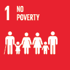
Poverty has many dimensions, but its causes include unemployment, social exclusion, and high vulnerability of certain populations to disasters, diseases and other phenomena which prevent them from being productive. Growing inequality is detrimental to economic growth and undermines social cohesion, increasing political and social tensions and, in some circumstances, driving instability and conflicts.
Manudam Paramitha Poya Day programme
SLT initiated the Manudam Paramitha initiative in 2016 wherein the Company conducts special programmes every Poya Day at Buddhist temples across the country to support the community, empower rural schools, and strengthen the education sector in Sri Lanka.
SLT went on to donate 28 sacred Bo-trees to Buddhist temples every month, to be planted on the temple premises.
SLT also distributed bags of traditional Sri Lankan rice to elders in the areas, while Mobitel distributed nutrition packs to pregnant mothers.
Thai Pongal celebration in Vavuniya
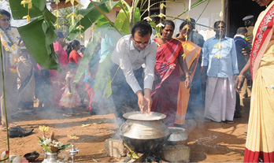
A special Thai Pongal celebration was organised by SLT at the Teplikulm Community Centre in Vellikulum Village, Vavuniya with the participation of religious leaders, Vavuniya Police, school children, principals, volunteers from the community centre, and families living in the area. Dry ration packs were
distributed to underprivileged families together with school bags and stationery to students. English book packs were also donated to school libraries in the area.
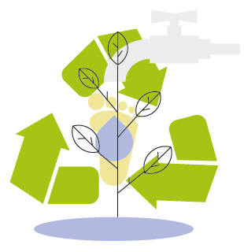
Environmental initiatives
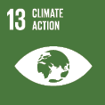
Climate change is a global challenge that does not respect national borders. It is an issue that requires solutions that need to be coordinated at the international level to help developing countries move toward a low-carbon economy.
SLT recently became a certified Carbon neutral oganisation. Through an initiative under the theme of “Earth is calling, are you listening?”, it assesses SLT's carbon emissions across its range of operations. The SLT Group believes that these are challenges that need to be addressed by responsible corporate citizens for the benefit of not only the local community but the entire planet.
Climate change, desertification, ocean acidification, carbon fertilisation, extreme weather conditions, and increasing food scarcity are just a few of the impacts of carbon emissions. Neutralising the environmental impacts of business operations has become a hot topic in today’s business environment and has become one of the key factors in determining the sustainability of companies worldwide.
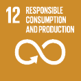
Sustainable consumption and production is about promoting resource and energy efficiency, sustainable infrastructure, and providing access to basic services, green and decent jobs and a better quality of life for all. Its implementation helps to achieve overall development plans, reduce future economic, environmental and social costs, strengthen economic competitiveness and reduce poverty.
Forests cover 30.7 per cent of the Earth’s surface and, in addition to providing food security and shelter, they are key to combating climate change, protecting biodiversity and the homes of the indigenous population. By protecting forests, we will also be able to strengthen natural resource management and increase land productivity.
Carbon Footprint Certification
SLT is the first Sri Lankan telecom operator to attain ISO 14064-1:2018 certification. It has been successful in carrying out greenhouse gas (GHG) emissions assessment and recently became a carbon neutral certified organisation.
A direct and indirect Greenhouse Gas (GHG) verification assessment for SLT was conducted by SLSI on stipulated emission sources and activities, confirming that the Organisational Carbon Footprint (direct and indirect) of Sri Lanka Telecom PLC for the financial year 2018 was 63,841 tons of Carbon Dioxide Equivalents (tCO2e). Direct emissions included stationery, mobile and fugitive emissions while indirect emissions encompassed imported energy, mobile combustion, waste disposal and municipal water. The calculations were carried out by ClimateSI in accordance with ISO 14064-1:2018 Standard developed by the International Organisation for Standardisation.
ISO 14064 is a series of international standards developed by the International Standards Organisation (ISO) to address the quantification and reporting of GHG emissions for organisations. The certification offers assurance to the Company’s stakeholders that it complies with internationally recognised GHG emission reporting standards in evaluating its carbon footprint and is a confirmation of the Company’s commitment to upholding its responsibility to the society and the environment.
| PV Solar Site Name |
Plant Capacity (KWp) |
Annual generation (MWh) |
Annual capex saving (LKR Mn.) |
Equivalent Carbon Footprint (metric tones) |
||||
| Kuliyapitiya | 15 | 19.8 | 0.43 | 14 | ||||
| Mattakkuliya | 15 | 19.8 | 0.43 | 14 | ||||
| Mount Lavania | 45 | 59.4 | 1.29 | 42 | ||||
| Wattala | 50 | 66.0 | 1.44 | 47 | ||||
| Welisara | 131 | 172.9 | 3.77 | 123 | ||||
| Kaduwela | 25 | 33.0 | 0.72 | 23 | ||||
| Ja-Ela | 35 | 46.2 | 1.01 | 33 | ||||
| Moratuwa TCC | 50 | 66.0 | 1.44 | 47 | ||||
| Kelaniya | 25 | 33.0 | 0.72 | 23 | ||||
| Ratmalana | 90 | 118.8 | 2.59 | 84 | ||||
| Maradana | 90 | 118.8 | 2.59 | 84 | ||||
| Chillaw | 40 | 52.8 | 1.15 | 37 | ||||
| Gampaha | 30 | 39.6 | 0.86 | 28 | ||||
| Kotugoda | 60 | 79.2 | 1.73 | 56 | ||||
| Hambantota | 30 | 39.6 | 0.86 | 28 | ||||
| Anuradhapura | 100 | 132.0 | 2.88 | 94 | ||||
| Kurunegala | 55 | 72.6 | 1.58 | 52 | ||||
| Havelock Town | 10 | 13.2 | 0.29 | 9 | ||||
| Nugegoda | 8 | 10.6 | 0.23 | 7 | ||||
| Total | 904 | 1,193.3 | 26.01 | 847 |
Beach clean-up for environmental conservation
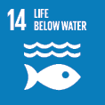
The world’s oceans – their temperature, chemistry, currents and life – drive global systems that make the Earth habitable for humankind. Our rainwater, drinking water, weather, climate, coastlines, much of our food, and even the oxygen in the air we breathe, are all ultimately provided and regulated by the sea. Careful management of this essential global resource is a key feature of a sustainable future.
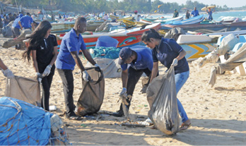
SLT extends its full support to environmental conservation programmes across the country. In 2019, the staff of the Ampara and Kalmunai regional offices joined staff from local hotels and volunteers with the support of MEPA, tri forces, and the local community to clean up the Arugam Bay coastline. SLT conducted an awareness campaign around environmental conservation through social media and billboards in the Arugam Bay area to highlight the importance of environmental pollution prevention and the obligations of the general public towards preserving the beauty of the country.
Planting for Water – Knuckles Reforestation project
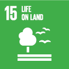
A “Planting for Water” reforestation project in the Knuckles forest area was conducted by the SLT Customer Club, Kandy together with staff of Kandy Regional Office. . Half an acre of land was allocated in the Knuckles high forest.

Environment cleaning programme
The SLT staff again joined hands with the SLT Customer Club, Kandy to conduct an environment cleaning programme at Thelgamuwa Oya. SLT displayed messages on the importance of protecting the environment in the surrounding areas to raise awareness amongst the community.
Baddegama Primary School water project
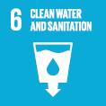
The SLT Customer Club, Kandy took another initiative with the Kandy Regional Telecom Office to repair the water supply system of the Baddegama Primary School in Thawalanthenna. Two new water tanks were provided and the supply was extended to two buildings. Another water line was also installed for public use on the school premises. A career guidance programme was conducted for students by SLT.
Initiatives by subsidiaries
Mobitel
Mobitel gifts 40,000 free spectacles to customers
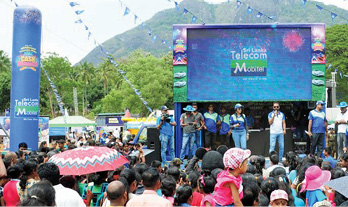
As part of its commitment to enhancing the quality of lives of customers across the island, Mobitel regularly engages in unique CSR projects that have a positive impact on its customer base. In its most powerful CSR initiative yet, Mobitel gifted over 40,000 spectacles to customers between 2016 and 2018. Mobitel’s Eye Clinics are held monthly at its Cash Bonanza event, and the past three years have seen the events held in 36 locations with thousands of eligible Mobitel customers in those areas able to access the Eye Clinics and receive the free spectacles. Free eye check-ups and consultation by optometrists were also provided to customers at the Eye Clinics.
Bus shelters in rural areas
Mobitel launched the “Shelter in Our Hands” project to install bus shelters in remote rural areas via upcycling. With many routes having inadequate bus shelters, Mobitel conceptualised the project to benefit both the community and the environment, helping travellers to have a stress-free experience.
Air pollution research
To better understand the impact of air pollution in congested cities, Mobitel joined hands with the University of Peradeniya to study air pollution in Kandy. Mobitel will act as the connectivity partner to facilitate data transmission from air pollution monitoring sensors.
e-Waste initiative
Electronic waste is an increasing issue due to the increasingly disposable nature of modern electronic devices. Mobitel initiated the e-Waste Collection Project to collect e-Waste through Mobitel branches and monthly Cash Bonanza Regional Carnivals and will hand over the waste to a Central Environmental Authority-authorised e-waste supplier for proper recycling.
SLT Human Capital Solutions
Sisu Diriya Scholarship
HCS works to ensure that the children of employees have a successful future and was proud to commemorate for the 9th consecutive year the annual Sisu Diriya Scholarship and School Books Donation Programme at Leisure World, Hanwella. Over 1,600 employees and their children participated, with 22 scholarships awarded to students who had passed their Grade 5 scholarship examinations, O-Level and A-Level examinations, as well as those selected to enter local universities.
Diriya Piyasa
HCS annually builds a house for a needy employee as part of the “Diriya Piyasa” initiative, and in 2019, a committee decided to build a house for the family of a late HCS employee. The objective behind this initiative is simply to initiate the mutual relationship and unity between employees, while lending a helping hand towards the welfare of employees through financial aid and participation.
Blood donation programme
HCS also conducted a blood donation programme in Minnana, Getahetta.
SLT Services
The SLTS Head Office in Welikada donated one day’s worth of salary from all staff members to the Apeksha Hospital, Maharagama in February 2019. In May 2019, a blood donation campaign was organised, which had the involvement of many donors. In December 2019, SLTS donated books and stationery items to 180 students at Siyabalewa School in Galenbindunuwewa, Anuradhapura.
SLT Campus
- The University held a tree planting and environmental conservation event in collaboration with the Ministry of Telecommunication, Foreign Employment and Sports in April 2019.
- Tourism and Hospitality Management students of SLTC Business School carried out a special project to prepare a guide on the Kandy Esala Perahera and distributed it to tourists in the city who had come to witness the pageant. A survey was also carried out to understand the requirements of tourists and determine what measures could be taken to improve their experience.
- The SLTC Green Army carried out a beach clean-up project at the Modara Crow Island to celebrate World Ocean Day. A plant was gifted to members of the community who helped the project.
- SLTC continues to work with schools across the island to support A-Level students with additional academic support and motivational programmes. SLTC also contributes towards providing opportunities for A-Level Technology stream students to obtain hands-on experience in conducting subject-based practicals.
- The University works together with the All Island Professional Lecturers’ Association (AIPLA) to sponsor their special projects with the objective of raising awareness about higher education and building a knowledge-centred economy in Sri Lanka.
- SLTC also hosts Teacher Training Programmes at the SLTC Padukka Campus premises, which senior staff members actively contribute to on a continuous basis.
- SLTC works closely with the Sri Lanka Maths Olympiad to raise awareness about their activities across the island and supported the students who participated at the International Maths Olympiad 2019.